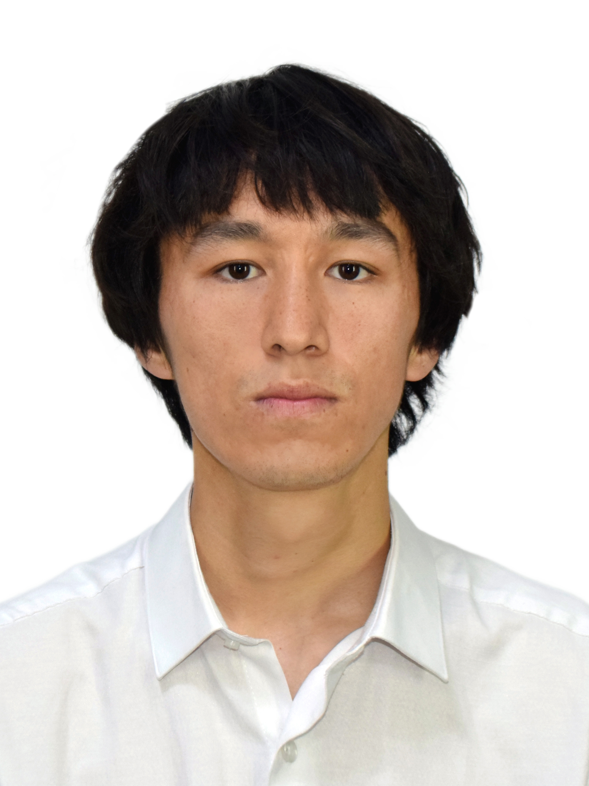

| ふりがな 氏名 |
だふらん・えるがしぇふ
ダフラン・エルガシェフ
Davran Ergashev
|
|---|
| 生年月日 | 2001年2月9日（満25歳） | 性別 | 男 |
|---|---|---|---|
| 電話番号 | +996 553 205 855 | メール | W.lowlight@gmail.com |
| 現住所 |
キルギス共和国 ビシュケク市 郵便番号：720000 ※日本国内の住所は現在なし |
||
| 学 歴 |
20xx年9月入学 20xx年5月卒業 |
ギムナジウム第4校（9学年） 所在地：アタイ・オゴンバエフ通り207、ビシュケク |
|
| 20xx年9月入学 20xx年5月卒業 |
I.ラザコフ記念キルギス国立工科大学（KSTU）付属短大 機械工学技術学科 — テクニシャン（専門士） 所在地：マナサ通り66、ビシュケク 720044 |
||
| 2024年 | NAT N5 取得 | ||
| 現在 |
日本語 N4（N3勉強中）基本的な会話可能 ITスキルも学習中 |
||
| 職 歴 |
20xx年〜 現在 |
アパレル製造販売（家業手伝い） 両親のアパレルビジネスに従事。製造工程の管理から販売・顧客対応まで一貫して担当。 在庫管理、仕入れ交渉、売上管理など実務全般を経験。仕事の流れを理解し、責任を持って業務を遂行。 |
|
| 20xx年〜 現在 |
音楽制作（フリーランス） レコーディング、ミキシング、マスタリング、ビートメイキング。 自身のプロジェクト W.Lowlight の他、yupbucky の作品制作にも携わる。 |
||
| 免許・資格 |
• NAT N5（日本語能力試験）— 2024年 • 日本語 N4（現在N3勉強中） |
||
| 志望動機 |
私は両親のアパレルビジネスを長年手伝い、ものづくりとお客様対応の大切さを身をもって学びました。
また、音楽制作を通じて、目標に向かってコツコツと積み上げる習慣が身についています。 日本語学習を1年半前からコースで開始し、現在も継続して勉強中です。日本で働きながら、さらに日本語力とスキルを向上させたいと考えています。 未経験の分野でも、すぐに学び、戦力になれる自信があります。まずは日本で働く機会をいただき、成長しながら貢献したいです。 |
||
| 自己PR |
【目指すこと】 まずは仕事を通じて日本語を実践しながら、IT分野をしっかりと学び尽くしたいです。 【学習意欲と適応力】 新しいことへの抵抗がなく、必要なことはすぐに吸収します。日本語もコースで1.5年間勉強し、N4レベルまで習得しました。現在N3を勉強中です。ITスキルも独学で学び始め、AIを使いながら実践的な作業ができるようになりました。 【真面目で誠実】 与えられた仕事は最後までやり遂げます。日本での就労を真剣に考えており、長期的に働ける環境を望んでいます。 |
||
ブラウザの印刷機能でPDFとして保存できます